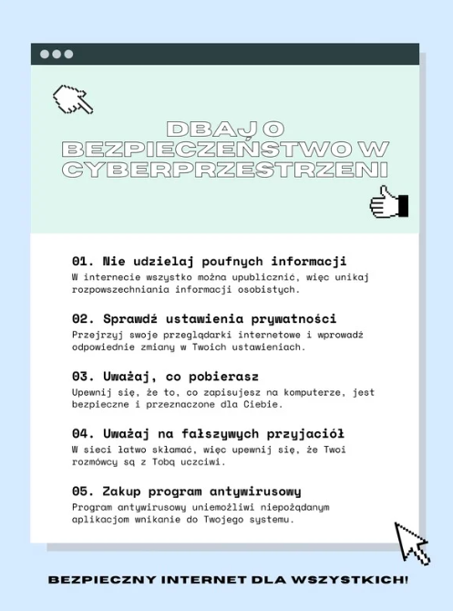
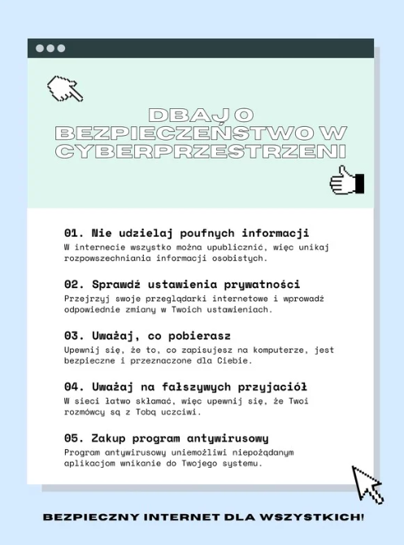

Cyberprzestępcy mogą zainfekować komputer swojej ofiary nawet na skutek samego wyświetlenia przez nią grafik dołączonych do wiadomości mailowej. Warto zatem jak najszybciej usuwać maile od nieznanych i wzbudzających podejrzenie nadawców. Najczęściej będą to wiadomości przesłane z zagranicznej domeny, a ich treść napisana w niedbały sposób – z licznymi błędami gramatycznymi. Tematyka jest zazwyczaj typowa dla SPAM-u, np. powiadomienie o wygranej w konkursie. Pod żadnym pozorem nie należy klikać w linki,ani otwierać załączników znajdujących się w takich mailach.
Do infekcji wirusem, trojanem, oprogramowaniem szpiegującym i innymi szkodliwymi programami może także dojść na skutek kliknięcia w pojawiającą się reklamę. Dlatego warto ignorować tego typu wyskakujące okna i jak najszybciej przeskanować system programem antywirusowym.
Chcąc zadbać o bezpieczeństwo w sieci, należy w jak największym stopniu utrudnić cyberprzestępcom proces rozszyfrowywania haseł – np. do systemu bankowości elektronicznej, poczty, routera czy sieci Wi-Fi. Przede wszystkim warto pamiętać, aby nie używać tych samych loginów i haseł w różnych miejscach sieci. Wyjątkowo łatwe do odgadnięcia są hasła w formie daty urodzenia, imienia czy innych krótkich słów. Znacznie więcej czasu zajmie hakerowi rozszyfrowanie hasła składającego się z wielu znaków – liczb, małych i wielkich liter oraz symboli specjalnych. W prosty sposób można je utworzyć, korzystając z darmowych generatorów online.
Bezpieczeństwo w internecie w ogromnym stopniu zależy od tego, jak często użytkownik aktualizuje system operacyjny, oprogramowanie antywirusowe, a także wszystkie zainstalowane aplikacje. Dzięki aktualizacjom możliwe jest bieżące usuwanie luk w zabezpieczeniach, które mogłyby cyberprzestępcom posłużyć do przeprowadzenia ataku. Jeżeli nie jesteś w stanie pamiętać o przeprowadzania aktualizacji w ręczny sposób, warto wtedy aktywować opcję ich automatycznego wgrywania.
Zapora sieciowa, zwana również ogniową, to system chroniący komputer znajdujący się w sieci LAN przed nieuprawnionym dostępem z zewnątrz. Firewall monitoruje ruch sieciowy oraz filtruje niebezpieczne połączenia przychodzące i wychodzące. Stanowi więc barierę przed różnego typu zagrożeniami internetowymi.
Po zakończeniu korzystania z serwisu wymagającego logowania się należy niezwłocznie skorzystać z opcji wylogowania. Jest to istotne zwłaszcza w przypadku korzystania z sieci współdzielonych z innymi użytkownikami – np. w szkole, pracy czy bibliotece. Dzięki wylogowaniu się zmniejszamy ryzyko, że poufne dane zostaną przejęte przez osobę trzecią.
Jeżeli podajesz w internecie swoje dane – np. rejestrujesz się, wypełniasz formularze elektroniczne czy kupujesz w sklepie online – upewnij się wcześniej, czy dany serwis został zabezpieczony za pomocą protokołu https. Sprawdzisz to, klikając w symbol kłódki, znajdujący się obok adresu strony w przeglądarce. Jeżeli serwis posiada certyfikat SSL, wtedy otrzymasz komunikat „Połączenie jest bezpieczne”.
Jeżeli logujesz się do banku przez internet, wtedy warto zadbać o bezpieczeństwo w sposób szczególny. Chodzi przecież o twoje pieniądze. Jeżeli strona jest zabezpieczona za pomocą protokołu https, to świetnie, ale możesz jeszcze bardziej utrudnić hakerom zadanie. Przykładem dwuetapowej weryfikacji danych jest konieczność wpisania po zalogowaniu dodatkowo kodu przesłanego na numer telefonu.
Jednym z najczęstszych powodów infekcji komputera szkodliwym oprogramowaniem jest pobieranie plików z nielegalnie działających stron. Jeżeli zastanawiasz się, jak być bezpiecznym w internecie, to w żadnym wypadku nie korzystaj z serwisów typu torrent do pobierania filmów. Ściągaj pliki jedynie z zaufanych i legalnych źródeł, których wiarygodności jesteś pewien.
Często się zdarza, że podczas instalowania legalnego i przydatnego programu można w pakiecie zainstalować szkodliwe narzędzia firm trzecich, które okazują się być złośliwym oprogramowaniem – np. koniem trojańskim, spyware czy rootkitem. Dlatego zalecamy dokładnie czytać wyświetlane przez kreator instalacji komunikaty i nie godzić się na wgrywanie dodatkowych komponentów.
W celu zwiększenia bezpieczeństwa w sieci warto używać kilku adresów mailowych. Najlepiej założyć nową skrzynkę przeznaczoną do zakupów internetowych oraz rejestracji w różnych serwisach. Nie należy takich operacji dokonywać ze swojego głównego konta, ponieważ użytkownik naraża się w ten sposób na przejęcie poufnych danych.
Hakerzy mogą przeprowadzić atak poprzez włamanie się do routera. Dlatego warto zmienić w panelu administracyjnym urządzenia domyślne dane. Najczęściej są one bardzo proste do odszyfrowania, gdyż przyjmują formę taką jak np. „admin”.
Cyberprzestępcy przeprowadzają często ataki, próbując wywołać w swoich ofiarach poczucie strachu czy wzbudzić presję czasu. Dlatego posługują się technikami phishingu, np. wymuszając pieniądze czy poufne dane osobowe. Szczególnym przykładem takiego działania są programy typu ransomware, blokujące dostęp do systemu na komputerze. Hakerzy podszywają się pod zaufane instytucje – np. policję, sąd czy biuro bezpieczeństwa, wyświetlając na ekranie monitora komunikat o rzekomym złamaniu prawa przez użytkownika. Obiecują odblokowanie komputera po wpłaceniu okupu w określonym terminie. Warto więc pamiętać, że policja i inne legalnie działające instytucje nigdy nie postępują w ten sposób. Nie należy więc wpłacać pieniędzy ani podawać żadnych poufnych danych.
W wyniku działań cyberprzestępców możesz bezpowrotnie utracić wszystkie cenne dane zapisywane na dysku komputera. Dlatego warto pamiętać o systematycznym wykonywaniu kopii zapasowych. Plików backup nie należy przechowywać na komputerze, lecz na zewnętrznych nośnikach danych (np. pendrive) oraz w wirtualnej chmurze.
Niebezpieczne skrypty znajdują się najczęściej na stronach o tematyce erotycznej, hazardowej czy związanej z podejrzanymi transakcjami finansowymi. W związku z tym warto unikać ich odwiedzania oraz chronić przed nimi swoje dzieci – np. za pomocą funkcji ochrony rodzicielskiej.
Aby uchronić swoje urządzenie przed atakami hakerów, warto regularnie skanować system pod kątem obecności wirusów oraz innego typu złośliwego oprogramowania. Powinien być to program monitorujący w trybie rzeczywistym oraz usuwający różnego typu zagrożenia internetowe. Użytkownicy Netii mogą korzystać z usługi Bezpieczny Internet, w ramach której korzystają z oprogramowania antywirusowego z funkcją ochrony sieciowej i kontroli rodzicielskiej. System ten pomaga skutecznie zadbać o bezpieczeństwo w sieci.
Jeżeli nie musisz, to nie łącz się z internetem poprzez publiczne, ogólnodostępne sieci Wi-Fi. W żadnym wypadku nie podawaj wtedy swoich poufnych danych – nie loguj się do systemów bankowości elektronicznej, poczty czy różnego typu serwisów transakcyjnych.
Tylko legalnie działające oprogramowanie jest bieżąco udoskonalane przez producentów i możliwe jest jego uaktualnianie do nowszych wersji. Dzięki temu mogą być usuwane luki w bezpieczeństwie, które umożliwiają hakerom przeprowadzanie niebezpiecznych ataków.
Zanim otworzysz plik otrzymany na płycie CD, pendrive czy innym zewnętrznym nośniku, pamiętaj o jego przeskanowaniu programem antywirusowym. Pozwoli to uniknąć infekcji komputera rootkitem, koniem trojańskim czy innym szkodliwym oprogramowaniem.
Jeżeli logujesz się do sieci na różnych urządzeniach – nie tylko komputerze, lecz jednocześnie na laptopie czy tablecie – wtedy ochrona samego komputera może okazać się niewystarczająca. Użytkownicy Netii mogą zabezpieczyć urządzenia mobilne przed zagrożeniami internetowymi, korzystając z usługi Bezpieczny Smartfon.

 

| Kliknij w Link Poniżej by przejść do prezentacji o Bezpieczeństwie w internecie |
|---|
| Link |
|---|